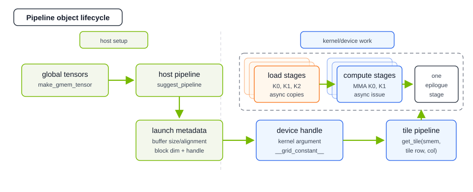
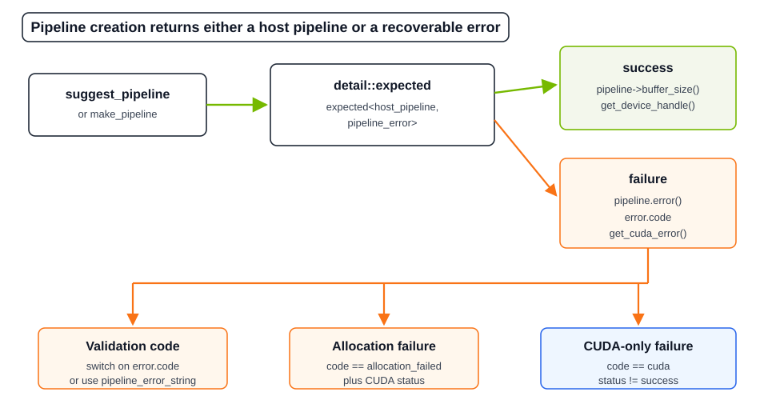
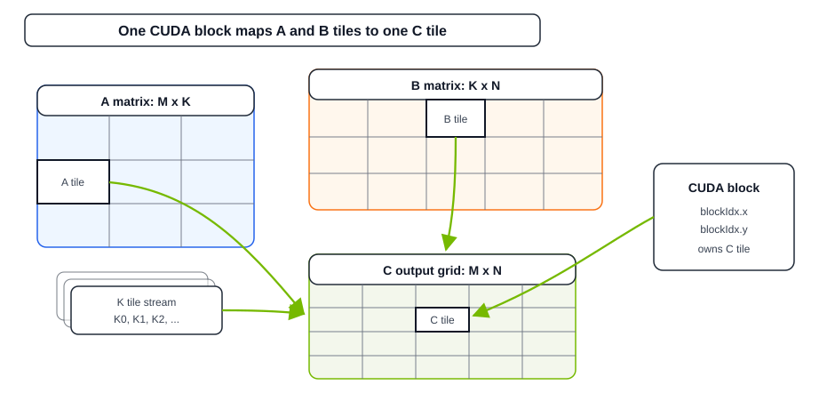
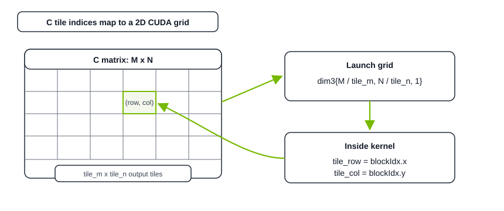
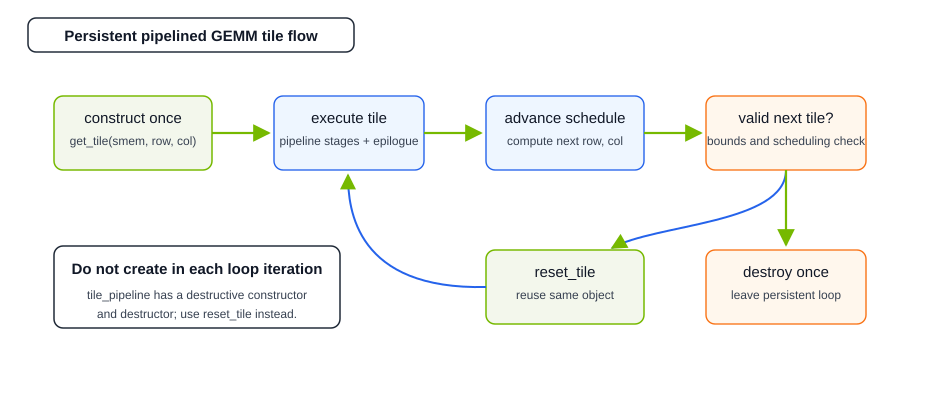
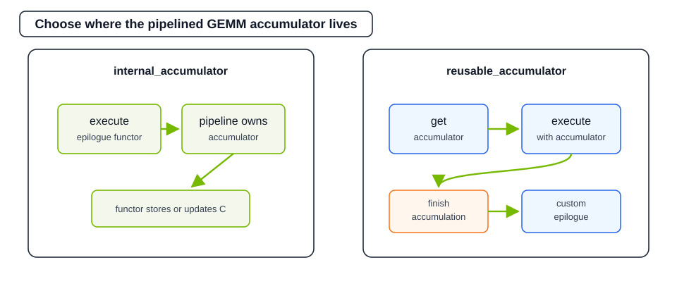

Using Pipelined GEMM#

Starting with cuBLASDx 0.5.0, the pipelining extension allows users to combine multiple
per-tile operations (the operations exposed by regular BLAS descriptors) into asynchronous pipelines that expose advanced CUDA
features such as TMA, Hopper WGMMA, Blackwell 1SM UTCMMA, Blackwell TMEM, and others.
The pipelining interface emphasizes fusion opportunities by moving the level of cuBLASDx execution higher,
starting from the global memory level, while allowing users to wrap their device GEMM into a single fusable and optimized function call.
Important
cuBLASDx Pipelining API is an interface allowing the users to apply cuBLASDx routines to efficiently decompose and
compute big global-memory GEMM problems.
This section is based on the introduction_pipeline.cu example included with cuBLASDx. See the Examples section for additional cuBLASDx samples.
To measure GEMM device performance and compare with a reference implementation, see the device_gemm_performance.cu example included with cuBLASDx.

Pipelining#
The regular MathDx operations are performed on the shared memory tile level, assuming that inputs are ready to be safely
used, so it usually looks like this:
Load data from shared into registers
Perform computations using shared memory as scratchpad (if needed)
Store results back to shared memory
This allows the libraries to utilize the out of order capabilities only on the shared --> registers memory level,
leaving the remaining operations to the users.
Pipelining’s main pillar is overlapping staged data loading with staged computation, thus maximizing the number of bytes and instructions in flight. Load stages and compute stages can both be asynchronous; after the K-stage accumulation is complete, a single epilogue stage consumes the final accumulator and stores or updates the output tile. An advanced extension of pipelining is the producer-consumer model, where separate threads are responsible for loading data into buffers and separate for computing results of the loaded elements.
cuBLASDx 0.2.0 introduced cublasdx::copy, an asynchronous copy mechanism allowing for limited overlapping of
per-tile computations and memory loads for next batch, allowing for fuller utilization of available hardware resources.
Although this release provided building blocks for asynchronous execution, it left construction of entire scaffold to
the user and did not provide space for more sophisticated synchronization schemes, such as mbarriers, thus blocking
the use of Tensor Memory Accelerator.
cuBLASDx 0.5.0 Pipelining API exposes:
same interface for performing optimized GEMM on all architectures,
arbitrary depth scaffolding for performing pipelined Generalized Matrix Multiplication (GEMM) with multiple load and compute stages in flight,
autovectorizing copy mechanism choosing between
TMA/LDGSTS/LDG+STSbased on provided layouts and architecture,synchronization dependent asynchronous MMA instructions, available only in pipelined mode (
WGMMA/1SM UTCMMA), andmbarrierbased synchronization mechanism, internally choosing between warp-specialized and unified execution paths
Quick Start Guide#
Pipeline Creation#
To use the pipelining API, two host-side setup steps are necessary:
- On host, create your block-level BLAS description for per-tile operation.
Add
BlockandBlockDimoperators for a block-level GEMM tile.Add
WithPipelineoperator to inform the library that this tile will be used in a pipelined context.(performance) If you won’t be using any per-element input preprocessing, add
EnableInputStreamingoperator.(performance) If you won’t use more threads than specified in
BlockDimoperator, addStaticBlockDimoperator.
#include <cublasdx.hpp>
using namespace cublasdx;
using GEMM = decltype(Size<128 /* m */, 128 /* n */, 32 /* k */>()
+ Precision<__half, __half, float>()
+ Type<type::real>()
+ Function<function::MM>()
+ Arrangement<cublasdx::row_major /* A */, cublasdx::col_major /* B */>()
+ Alignment<16, 16, 16>()
+ SM<890>()
+ Block()
+ BlockDim<256>()
+ WithPipeline()
+ EnableInputStreaming()
+ StaticBlockDim());
- On host, use the description from step 1 to create a
host pipelineobject. Create global memory tensors for global A and B matrices
Pass them as arguments to the
suggest_pipelinefunction.Verify if the
cublasdx::detail::expectedreturn value contains a valid pipeline.
- On host, use the description from step 1 to create a
#include <cublasdx.hpp>
using namespace cublasdx;
using BLAS = decltype(... + WithPipeline());
// Create global descriptors for full A and B matrices (not only tiles)
auto global_a = cublasdx::make_gmem_tensor<cublasdx::row_major>(a_device_pointer, m, k, lda);
auto global_b = cublasdx::make_gmem_tensor<cublasdx::col_major>(b_device_pointer, k, n, ldb);
constexpr int pipeline_depth = 4;
auto pipeline = cublasdx::suggest_pipeline<pipeline_depth, BLAS>(global_a, global_b);
if(not pipeline) {
auto const& error = pipeline.error();
std::cout << "Failed to create pipeline";
if (error.code != cublasdx::pipeline_error_code::none) {
std::cout << ": " << cublasdx::pipeline_error_string(error.code);
}
if (error.get_cuda_error() != cudaSuccess) {
std::cout << " (" << cudaGetErrorString(error.get_cuda_error()) << ")";
}
std::cout << std::endl;
exit(1);
}
Pipeline Creation returns a value-or-error result. A successful result provides the host pipeline object that owns
launch metadata and any host-side resources. A failed result provides cublasdx::pipeline_error for logging or
programmatic recovery.

Requirements on pipeline creation:
Correct problem definition: A and B matrices must be compatible, i.e. have the same
KdimensionGlobal problem divisibility: global problem size must be divisible by descriptor specified tile size (this limitation might be removed in the future).
- Number of pipeline stages (depth) must be less than or equal to the total number of K tiles
The number of K tiles is
global_k / tile_k. A chosen pipeline depth must not exceed this value.
Flexible-precision emulation K limit: pipelines using
RequiredMantissaBitsrequireglobal_k <= floor((2^31 - 1) / ((2^8 - 1) * (2^8 - 1))), orglobal_k <= 33025. The emulation implementation slices inputs toint8and accumulates products of sliced 8-bit values in an internalint32GEMM path. Use split-K for larger emulation problems.
If any of these requirements fails, suggest_pipeline and make_pipeline return cublasdx::pipeline_error in the
error() branch. Host code can inspect error.code for the pipeline error code and call
error.get_cuda_error() for CUDA runtime status. If CUDA emulation preprocessing fails after cuBLASDx validation succeeds, error.code is
pipeline_error_code::cuda and error.get_cuda_error() reports the CUDA status.
For the complete list of error codes and the host pipeline accessors returned on success, see Pipeline Creation Result.
Attention
Why are pipelines created on host?
Some elements of the CUDA SDK require driver calls; one example is Tensor Memory Accelerator descriptor creation.
To expose TMA as one of the automatically chosen options underneath, cuBLASDx must adhere to this limitation.
Passing Pipeline To Kernels#
- After a host pipeline has been successfully created, it exposes the properties needed to configure a kernel launch efficiently.
buffer_alignment()describes alignment of single shared memory buffer owned by the pipeline.buffer_size()describes size of single shared memory buffer owned by the pipeline.get_block_dim()describes the required block configuration to run this pipeline.get_device_handle()returns the device pipeline object that should be passed by value to a kernel.
Example of a kernel execution configuration:
// ... pipeline creation
auto shared_memory_size = cublasdx::make_shared_storage_calculator()
.add(pipeline->buffer_alignment(), pipeline->buffer_size())
.get();
auto block_dim = pipeline->get_block_dim();
kernel<<<grid_dim, block_dim, shared_memory_size>>>(pipeline->get_device_handle(), ...);
Taking Pipeline As Argument#
The device handle returned by pipeline->get_device_handle() can be passed only to __global__ functions
(not __device__) when annotated with __grid_constant__.
Additionally, a ::max_threads_per_block trait can be used for getting new launch bounds limiting value.
template<class BLAS, class Alpha, class Beta, class CTensor, class DevicePipeline>
__launch_bounds__(DevicePipeline::max_threads_per_block, 1) __global__
void gemm_kernel(Alpha const alpha,
Beta const beta,
CTensor global_c,
__grid_constant__ DevicePipeline const device_pipeline) {
Initializing Tile Pipeline In Kernels#
The device_pipeline object should remain a kernel argument and should not be copied to on-chip memory.
Convert it to a per-block tile_pipeline object by indexing:
extern __shared__ __align__(device_pipeline.buffer_alignment()) cublasdx::byte smem[];
auto tile_pipeline = device_pipeline.get_tile(smem, blockIdx.x, blockIdx.y);
Alternatively, smem can be sliced to fit something other than pipeline itself:
extern __shared__ __align__(device_pipeline.buffer_alignment()) cublasdx::byte smem[];
auto [smem_pipeline, smem_c_tensor] =
cublasdx::shared_memory::slice<char, CType>(
smem,
device_pipeline.buffer_alignment(),
device_pipeline.buffer_size(),
cublasdx::alignment_of_v_c<BLAS>,
BLAS::suggest_layout_smem_c());
auto tile_pipeline = device_pipeline.get_tile(smem_pipeline, blockIdx.x, blockIdx.y);
How to partition global tensor into tiles?
The general device GEMM looks like the following, where total global GEMM dimensions are MxNxK and
per-block tile-dimensions are tile_m x tile_n x tile_k:

The C matrix determines problem partitioning because it is the reduction output tensor.
Its size (M x N) is divided into tile_m x tile_n independent sub-problems, each of which
is solved by an independent CUDA block. These sub-problems could be addressed in the following manner:

The simplest way to perform this partitioning is to launch a CUDA grid of size:
dim3 grid_dim = dim3 {m / tile_m, n / tile_n, 1};
With this convention, blockIdx.x is the output tile row and blockIdx.y is the output tile
column:
Grid dimension |
Block index |
Tile coordinate |
|---|---|---|
|
|
|
|
|
|
This way there will be exactly 1 block for each 1 sub-problem, and the block index will be the same as the sub-problem tile index. There are other, more advanced, software ways of scheduling work, such as threadblock swizzling or persistent stream-k scheduling.
Resetting A Pipeline#
If a persistent execution is chosen, the pipeline needs to reset its state and start executing with
a new output tile. This is possible with a call to device_pipeline.reset_tile().

device_pipeline.reset_tile(tile_pipeline,
new_tile_idx_row,
new_tile_idx_col);
Warning
tile_pipeline object has a destructive constructor and destructor, which can be called
only once per kernel execution. It’s important to avoid creating new tile_pipeline every
loop iteration and use reset_tile instead.
Executing Pipelined GEMM#
Depending on the chosen accumulation mode, there are two ways of executing a pipelined GEMM:
In both modes, tile_pipeline.execute drives the staged GEMM pipeline: asynchronous load stages prepare K tiles while
asynchronous compute stages issue MMA work for previously prepared tiles. More than one load stage and more than one
compute stage can be in flight. After those K-stage accumulations are complete, exactly one epilogue stage consumes the
final accumulator for the output tile.
Execute with internal accumulation (pipeline owns the accumulator).
auto tile_pipeline = device_pipeline.get_tile(smem, blockIdx.x, blockIdx.y);
auto tile_gmem_c = cublasdx::get_tile(global_c, BLAS::c_shape, blockIdx.x, blockIdx.y);
// Prepare epilogue functor
auto epilogue_functor = [&](auto& accumulator) {
auto d_fragment = accumulator.make_partition_and_copy(tile_gmem_c);
cublasdx::axpby(alpha, accumulator.get_results(), beta, d_fragment);
accumulator.partition_and_copy(d_fragment, tile_gmem_c);
};
tile_pipeline.execute(epilogue_functor);
In this interface the results of the GEMM are accessed via epilogue functor, getting accumulator as its only argument.
What is available in the epilogue functor?
Epilogue functor always:
operates on the number of threads used as the value in
BlockDimoperatorcan be synchronized using
tile_pipeline.epilogue_sync()
This is also true when heuristic_blocksize mode of pipeline execution is used. This synchronization
operation has the same memory guarantees as a regular syncthreads (bar.sync).
Execute with reusable accumulation (user owns the accumulator).
auto tile_pipeline = device_pipeline.get_tile(smem, blockIdx.x, blockIdx.y);
auto tile_gmem_c = cublasdx::get_tile(global_c, BLAS::c_shape, blockIdx.x, blockIdx.y);
auto accumulator = tile_pipeline.get_accumulator();
tile_pipeline.execute(accumulator);
// Use the same thread scope as execute(accumulator); do not guard this with if(accumulator.is_thread_active()).
tile_pipeline.finish_accumulation();
// Inlined epilogue
auto d_fragment = accumulator.make_partition_and_copy(tile_gmem_c);
cublasdx::axpby(alpha, accumulator.get_results(), beta, d_fragment);
accumulator.partition_and_copy(d_fragment, tile_gmem_c);
In this manual interface the accumulator is owned by user code. finish_accumulation() is required after
execute(accumulator) and before reading accumulator contents, including get_results(), axpby(),
partition_and_store(), or reduce_and_store() style epilogues. The convenience
tile_pipeline.epilogue(accumulator, functor) path calls finish_accumulation() internally.
Call finish_accumulation() with the same thread scope as tile_pipeline.execute(accumulator). Do not guard it with
if(accumulator.is_thread_active()); internal warp-specialization may require threads that do not own accumulator
elements to participate in the finish step.
Advanced Pipeline Configuration Options#
Heuristic Based Pipeline Depth Choice#
Pipeline depth is an argument that can be either carefully chosen and specified, or left to the library, which will try to fill as much of shared memory as possible, by choosing the architecturally maximal depth. Depth controls how many K tiles can be staged by the pipeline. On architectures that support it, this can mean multiple asynchronous load stages and multiple asynchronous compute stages in flight at the same time; it does not create multiple epilogue stages for one output tile.
// Explicit choice version
constexpr int pipeline_depth = 4;
auto pipeline = cublasdx::suggest_pipeline<pipeline_depth, BLAS>(global_a, global_b);
// Heuristic version
auto pipeline = cublasdx::suggest_pipeline<BLAS>(global_a, global_b);
Result Storage Options#
The public result-storage mode names are cublasdx::internal_accumulator and cublasdx::reusable_accumulator.
They replace the older internal_accumulation / external_accumulation terminology.
This advanced option controls ownership of pipeline results. The accumulator can be owned by the pipeline and exposed only as an epilogue lambda argument:

Mode |
Owner |
Required flow |
|---|---|---|
|
Pipeline |
Call |
|
User code |
Call |
// Pipeline owns the accumulator
auto pipeline = cublasdx::suggest_pipeline<BLAS, cublasdx::internal_accumulator>(global_a, global_b);
// ... later in device code
auto epilogue_functor = [](auto const& accumulator) {
// some epilogue
};
tile_pipeline.execute(epilogue_functor);
Alternatively, if more flexibility is required, the accumulator can be reusable and owned by user code. This may lead to performance regressions on some architectures.
// User owns the reusable accumulator
// host code
auto pipeline = cublasdx::suggest_pipeline<BLAS, cublasdx::reusable_accumulator>(global_a, global_b);
// ... later in device code
auto accumulator = tile_pipeline.get_accumulator();
tile_pipeline.execute(accumulator);
// Use the same thread scope as execute(accumulator); do not guard this with if(accumulator.is_thread_active()).
tile_pipeline.finish_accumulation();
some_epilogue(accumulator.get_results());
// tile_pipeline.epilogue(accumulator, functor) remains compatible, calls finish_accumulation() internally,
// and preserves the required thread scope.
When using tile_pipeline.epilogue(accumulator, functor), the functor must consume the accumulator through
get_results(), axpby(), partition_and_store(), or reduce_and_store().
The reduce_and_store(output, lambda) epilogue calls the lambda as lambda(result_element, output_element, coord),
where coord is the element’s (m, n) coordinate within the output tile; for memory-backed outputs, padded
out-of-bounds elements of a predicated GEMM are skipped.
Use finish_accumulation() directly for custom flows that do not read the accumulator inside the epilogue functor.
Call it with the same thread scope as tile_pipeline.execute(accumulator); it is unsafe to call it under
if(accumulator.is_thread_active()) because internal warp-specialization may require broader participation.
Warning
Why reusable accumulation can cause performance regressions?
cuBLASDx internally applies register trading in warp-specialized kernels, allowing some threads to own more registers than others. This
optimization is disabled when user wants to own the results.
Blocksize Strategy Options#
By default, a cuBLASDx pipeline expects the kernel launch to use pipeline->get_block_dim() as the block dimension. This allows the internal implementation to use optimizations such as warp-specialization, adding extra threads to only act as producers.
Alternatively, as an advanced option, the user can specify cublasdx::fixed_blocksize which forces the pipeline to use the same block-dimension rules as the
BlockDim operator. This choice provides more control and flexibility, but disables warp-specialized kernel paths.
// Default - heuristic
auto pipeline = cublasdx::suggest_pipeline<BLAS, cublasdx::internal_accumulator, cublasdx::heuristic_blocksize>(global_a, global_b);
// Fixed - explicit user choice
auto pipeline = cublasdx::suggest_pipeline<BLAS, cublasdx::internal_accumulator, cublasdx::fixed_blocksize>(global_a, global_b);